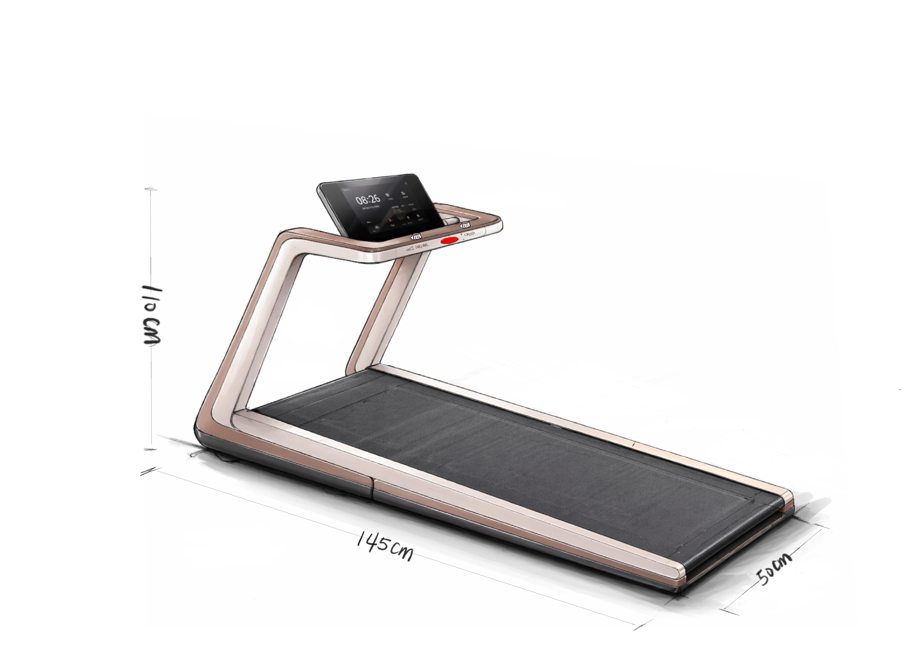
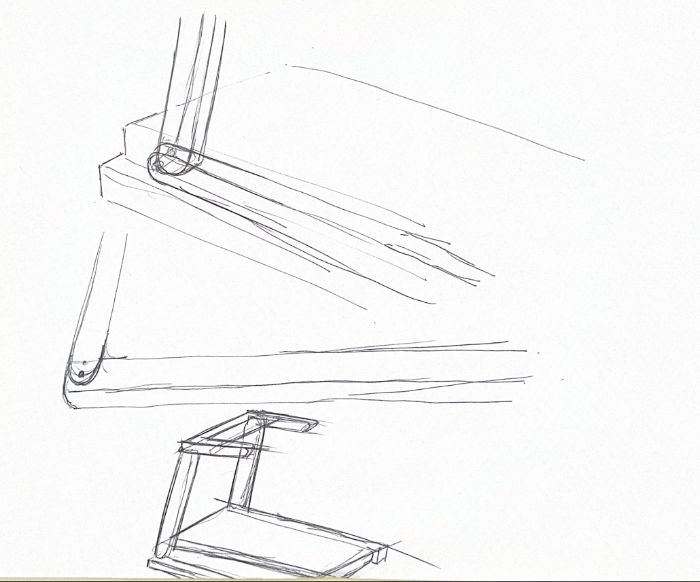
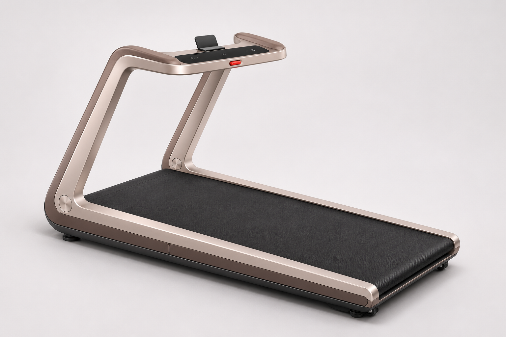
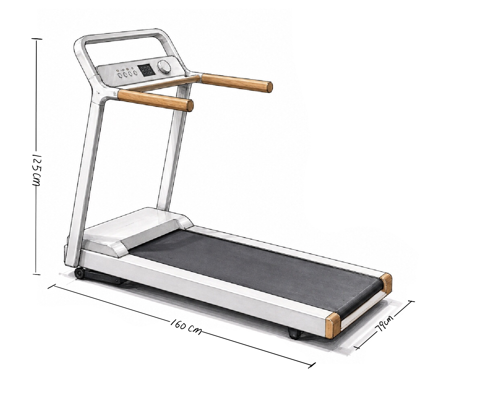
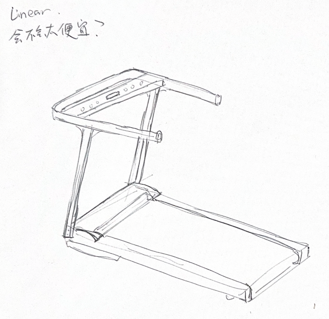
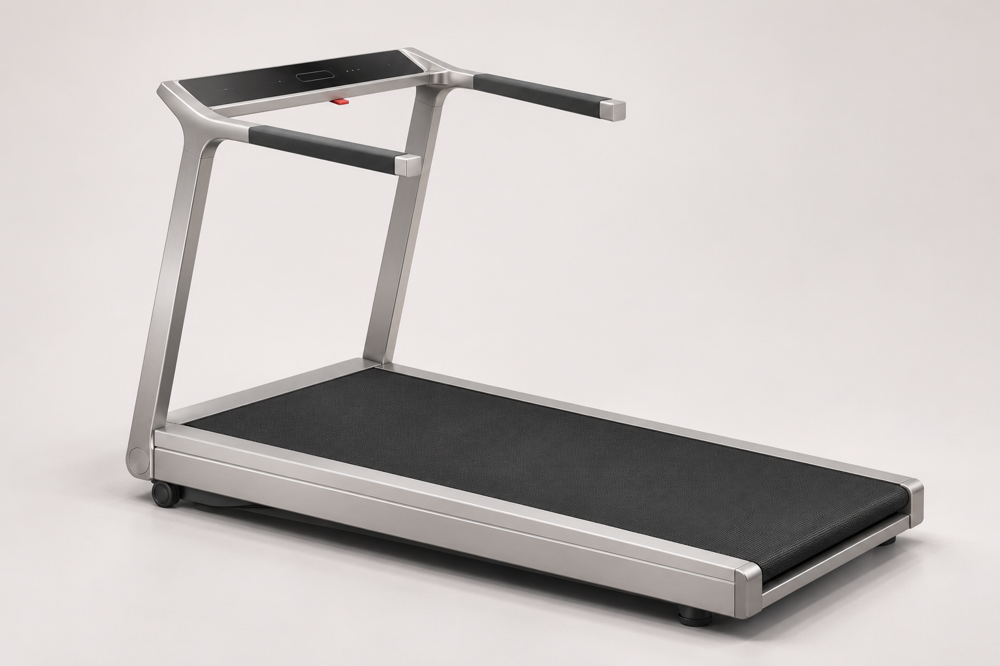
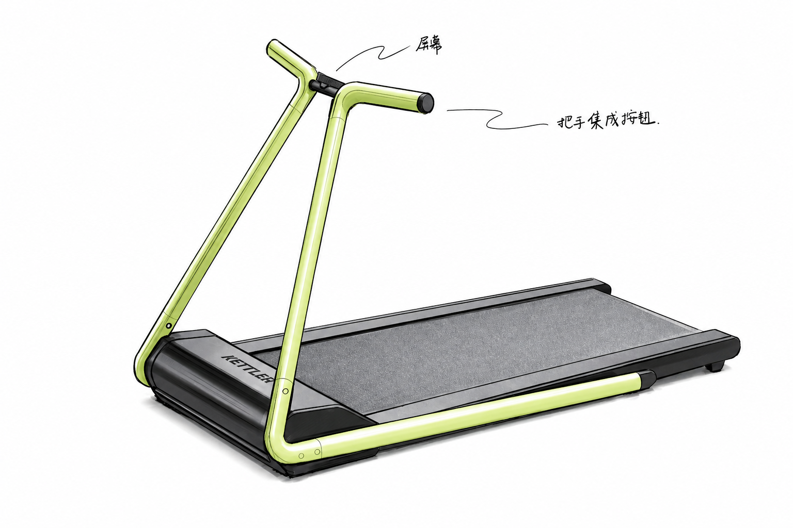
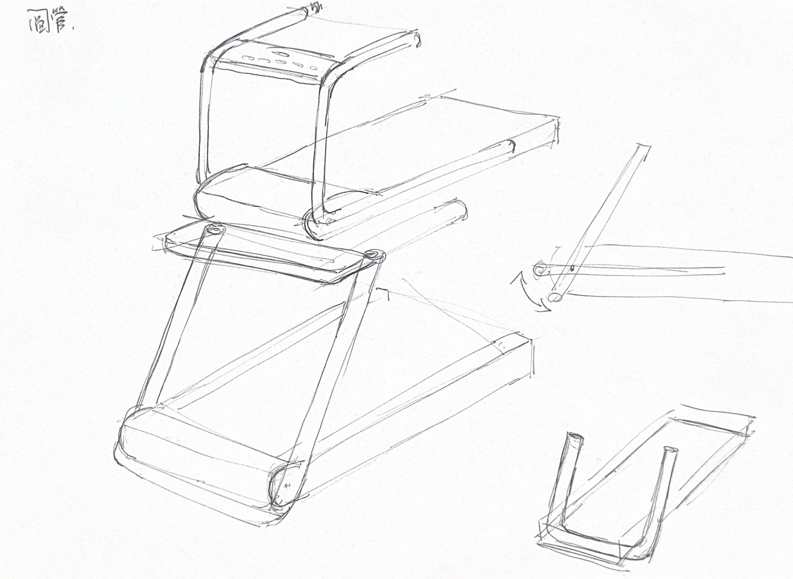
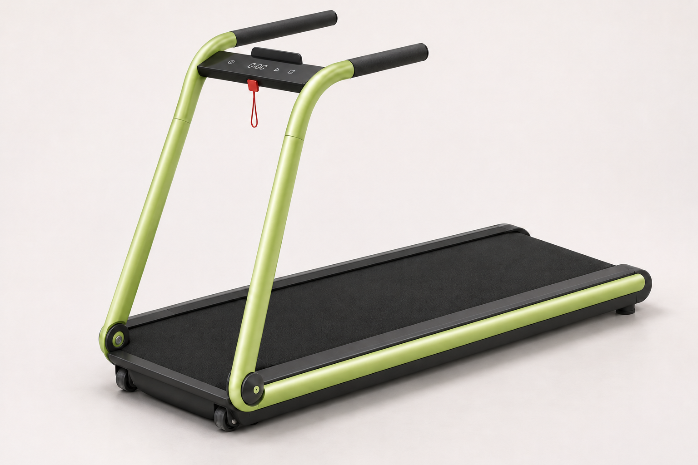

01 · Lynmate 灵伴 保住大C形，处理下转轴。
对应原汇报149–155页，以及同事对立柱转轴、侧框衔接的探索。概念归属以用户在《同事进度》中的解释为准。



继续保留
连续的大C主体、宽扁截面与明暗材质分工，保留原概念的家居感。
本轮提出
下转轴与侧框齐平处理；降低上部屏幕体量，改成薄横向触控区与小型手机托。此为新提议，未获选定。
02 · Linear 凌序 从连接细节提升完整度。
对应原汇报175–180页和同事第5页草图，针对向Z7PRO靠拢后显得单薄、廉价的问题调整。



继续保留
同事草图的低面板与双扶手布局、原凌序的薄矩形截面与精简比例。
本轮提出
上转角采用连续过渡，控制面板与框架统一厚薄；黑色握持区与金属质感主体分开。材料工艺与成本仍待评估。
03 · Zephyr 蝶悦 圆管语言，延续家族关系。
对应原汇报162–167页和同事第7页探索：从原蝶悦的轻盈圆管出发，采用更接近Z7PRO的双立柱、平行扶手组合。



继续保留
圆管主导的轻盈造型；沿用同事提出的双立柱、平行扶手和下转轴关系。
本轮提出
统一圆管与侧框的语言、压薄控制桥，将机头体量下置以接回全域跑台目标。生产线复用程度尚未验证。
本轮为外观方向迭代，尚非尺寸受控的CAD重建。折叠、15°爬坡、竖放支撑、封装与生产成本未验证；图中呈现不等于已经实现。被否决的上一套生成图未用于本轮。